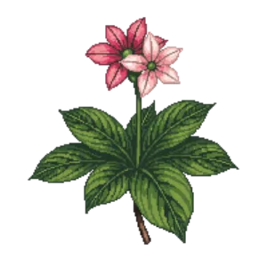

Wax Begonia
Begonia semperflorens

Wax Begonia is an annual for edging, groundcover, suited to shade and partial shade and loam, flowering May, Jun, Jul, Aug, Sep, Oct.
| Type | Annual |
|---|---|
| Mature height | 30 cm |
| Spread | 30 cm |
| Aspect | shade and partial shade |
| Foliage | Deciduous |
| Hardiness | USDA 10a-11a |
| Pollinator-friendly | No |
| Pet-safe | No |
Where to use it in a border
At around 30 cm, it sits best along the front edge, where a low, spreading habit reads best. Give it about 30 cm of room to spread, roughly 3 to the metre when planted in a drift. It is hardy across USDA zones 10a to 11a, so check it suits your area before planting.
It appears in our lists of shade.
Flowering through the year
JFMAMJJASOND
Worth knowing
- It tolerates a shaded, north-facing spot.
- Not recorded as pet-safe; site it away from pets that graze if that matters to you.
Good companions
Plants that share its conditions and style, chosen to complement its place in the border:
- False Holly 'Goshiki'for height behind it
- Boxwood 'Green Gem'to edge in front
- Boxwood 'Green Velvet'for height behind it
- Boxwood 'Winter Gem'for height behind it
- Japanese Holly 'Sky Pencil'for height behind it
- Yew 'Densiformis'for height behind it
Garden styles
Formal Foundation planting Modern Shade cottage
See Wax Begonia set in a full border, with spacing and companions worked out for your own conditions, in Border Builder.